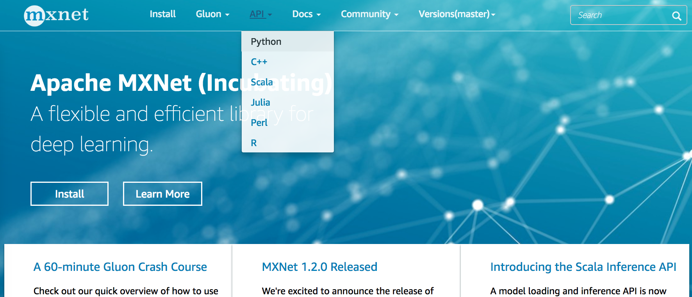
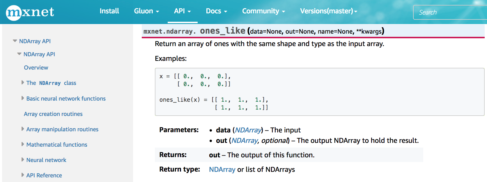

受篇幅所限，本书无法对所有用到的MXNet函数和类一一详细介绍。读者可以查阅相关文档来做更深入的了解。
当我们想知道一个模块里面提供了哪些可以调用的函数和类的时候，可以使用dir函数。下面我们打印nd.random模块中所有的成员或属性。
```{.python .input n=1} from mxnet import nd
print(dir(nd.random))
通常我们可以忽略掉由`__`开头和结尾的函数（Python的特别对象）或者由`_`开头的函数（一般为内部函数）。通过其余成员的名字我们大致猜测出这个模块提供了各种随机数的生成方法，包括从均匀分布采样（`uniform`）、从正态分布采样（`normal`）、从泊松分布采样（`poisson`）等。
## 查找特定函数和类的使用
想了解某个函数或者类的具体用法时，可以使用`help`函数。让我们以`NDArray`中的`ones_like`函数为例，查阅它的用法。
```{.python .input}
help(nd.ones_like)
从文档信息我们了解到，ones_like函数会创建和输入NDArray形状相同且元素为1的新NDArray。我们可以验证一下。
{.python .input}
x = nd.array([[0, 0, 0], [2, 2, 2]])
y = x.ones_like()
y
在Jupyter记事本里，我们可以使用?来将文档显示在另外一个窗口中。例如，使用nd.random.uniform?将得到与help(nd.random.uniform)几乎一样的内容，但会显示在额外窗口里。此外，如果使用nd.random.uniform??，那么会额外显示该函数实现的代码。
读者也可以在MXNet的网站上查阅相关文档。访问MXNet网站 https://mxnet.apache.org/ （如图2.1所示），点击网页顶部的下拉菜单“API”可查阅各个前端语言的接口。此外，也可以在网页右上方含“Search”字样的搜索框中直接搜索函数或类名称。

图2.2展示了MXNet网站上有关ones_like函数的文档。

dir和help函数，或访问MXNet官方网站。NDArray支持的其他操作。